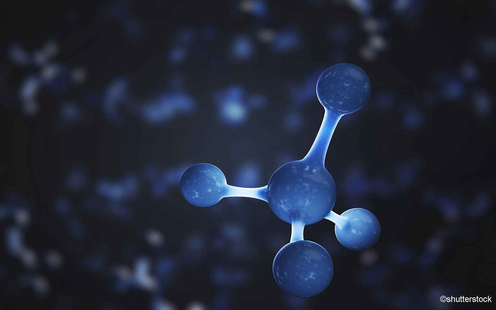

Hidrocarbonetos são compostos químicos formados exclusivamente por átomos de hidrogênio e carbono. Eles constituem
a base fundamental dos compostos orgânicos e são essenciais para a vida e para a indústria química..

Termoquímica
A termoquímica é o ramo da química que estuda as trocas de energia em forma de calor que acompanham as reações químicas
e os processos físicos. Essencialmente, ela investiga como a energia é absorvida ou liberada durante esses processos, influenciando não apenas
a temperatura, mas também as propriedades termodinâmicas das substâncias envolvidas.
Equilíbrio Químico
O equilíbrio químico é um conceito fundamental na química que descreve o estado de uma reação química na qual a taxa da reação direta
é igual à taxa da reação inversa. Isso significa que, durante o equilíbrio, as concentrações dos reagentes e dos produtos permanecem constantes ao longo do tempo,
embora as moléculas continuem a se transformar de um lado para o outro da equação química..
Economia Circular
A economia circular é um conceito econômico e ambiental que se contrapõe ao modelo tradicional linear de "extrair-produzir-descartar".
Em vez de descartar produtos e resíduos, a economia circular propõe maximizar o uso de recursos existentes, minimizando o desperdício e prolongando a vida útil
dos materiais através de ciclos de reutilização, recuperação e reciclagem..
Princípio dos 12Rs
O princípio dos 12 Rs é uma abordagem que visa promover práticas sustentáveis e responsáveis
em relação ao consumo e ao gerenciamento de resíduos. Este princípio expande o conceito tradicional dos 3 Rs
(Reduzir, Reutilizar, Reciclar) adicionando novas dimensões para uma abordagem mais abrangente e eficaz na redução do impacto ambiental.
{kind=link}
{kind=link}
{kind=link}